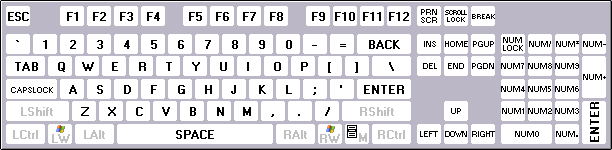

Version 1.3
Replacer for the noclose.exe program used by the Total Commander file manager for starting console applications without closing the console window.
| Author: | Konstantin Vlasov, 2011 | |
| Homepage: | http://flint-inc.ru/ | |
| E-mail: | support@flint_inc.ru |
Usually when you start a console or DOS application from Total Commander, a console window appears with the program started, and after the program is finished this windows is closed immediately. This is very inconvenient if you need to view the text that the program printed. That's why Total Commander allows to start console applications without closing the console window. To do so the user should start the program by pressing Shift+Enter hotkey instead of the usual Enter.
In this case Total Commander executes the following command line:
noclose.exe <parameters>
where <parameters> is the application you started (including its own command-line parameters if any), and noclose.exe file is a part of TC distribution and located in its directory. This is just a small stub program that starts the system command interpreter cmd.exe (in WinNT-based systems) or command.com (in Win9x) with the parameter /K so that the console window remained active after execution. NoClose Replacer allows to customize the TC's behaviour to one's needs more flexibly.
Note: The described method was implemented starting with TC 8.0. Earlier a shortcut noclose.pif was used that was installed into the Windows system directory. If you are using TC version belo 8.0, please, use NoClose Replacer 1.2. Starting with 1.3 this old method is no longer supported.
The minimal system requirements depend on the program's variant used.
Open the progam's archive in Total Commander and it will be suggested for automatic installation. If you turn it off just unpack the archive's contents into TC installation directory replacing existing files.
By default NoClose Replacer behaves identically to the standard noclose.exe. If you put a NoClose.ini file beside the program it will be read and processed when program starts. Description of all the supported keys follows.
Section [General]
CommandProcessor
Program that will be used as command line shell. You can specify additional parameters here as well. By default the Unicode and non-Unicode use the command linesand
cmd.exe /K respectively. If you wish to enclose the whole line into double quotes (e.g. because of spaces in paths) you need to double the quotes! (This is a feature of system functions that read INI files.) You can use the expression %1 which will be replaced with the full command line passed to NoClose. If you don't specify %1 the command line will be just appended to the end of the command.
command.com /K
- Example 1
Starting: noclose.exe file.exe /param1 /param2
CommandProcessor=cmd.exe /K
Result: cmd.exe /K file.exe /param1 /param2
- Example 2
Starting: noclose.exe file.exe /param1 /param2
CommandProcessor=""C:\Program Files\4DOS\4DOS.COM""
Result: "C:\Program Files\4DOS\4DOS.COM" file.exe /param1 /param2
- Example 3
Starting: noclose.exe file.exe /param1 /param2
CommandProcessor=shell.exe "%1" /wait
Result: shell.exe "file.exe /param1 /param2" /wait
ShowWindow
This parameter specifies how the console window will look after starting the program. Possible values:By default the normal mode is used.
normal — the window is opened as usual, in normal mode. minimize — after creation the window is minimized. maximize — after creation the window is maximized. hide — the window will be hidden. Be careful, you will not be able to interact with application running in a hidden window!
ShortcutWaitDelay
Time (in milliseconds) to wait for pressing an additional hotkey. If this parameter is non-zero NoClose Replacer will not start the command interpreter immediately but will wait for the time specified. If a hotkey is pressed during this period the application checks for presence of this hotkey in the [Shortcuts] section (see below) and starts the application assigned to this hotkey. If no hotkey was pressed or the hotkey is not defined in the settings the default command interpreter defined by the CommandProcessor key will be started.
Section [Shortcuts]
In this section specific hotkeys can be assigned for starting alternative programs instead of ones specified in the CommandProcessor parameter. The format is following:Possible values for modifiers:
<Modifiers>+<Key>=<Command> Please note: In Win9x the left and right modifier keys (Shift, Ctrl and Alt) are not distinguished by the system, therefore NoClose Replacer will not be able to distinguish them too!
L — left key R — right key C — Ctrl A — Alt S — Shift W — Win M — ContextMenu
Examples:The main key is separated from the modifiers by the symbol '+' (plus) which must be specified in any case, even when there are no modifiers. If the main key is absent the plus sign must not be written.
LW — LeftWin (left Win key) CRA — Ctrl + RightAlt (any Ctrl key + right Alt key) LSRS — LeftShift + RightShift (simultaneous pressing of left and right Shift keys)
Examples:The full list of the notations for all keys:
C+A — Ctrl + A AS+F9 — Alt + Shift + F9 LSW — LeftShift + Win (without the main key) +PRNSCR — PrintScreen (without the modifiers) A — Alt +A — A (that's why the plus sign is needed) Examples of command entries:
[Shortcuts] CS=cmd.exe /C LAS+TAB=4nt.com "%1" +SCROLLLOCK=C:\run.bat
First, thanks to Aleksey Fomin (Led) who precisely described the idea of the program and created the first working prototype of it using Delphi. Unfortunately, this IDE creates very large EXE files, so now the program is developed in Visual C++.
Also thanks to Vadim Kazakov who acted as the beta-tester for this program, to Icfu and mozers who suggested and tested very interesting improvements, and to all users who reported about bugs in the program and gave ideas about making the program better.
And of course, I can't but thank Christian Ghisler who created such wonderful tool as Total Commander.